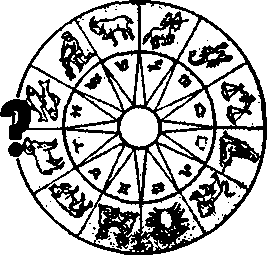
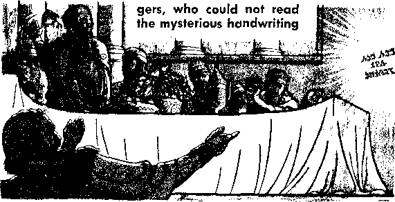

A Day Without the Police
Look What's on Phonograph Records
THE REASON FOR THIS MAGAZINE
Newt sources that are able to keep you awake to the vita! issues of our times must be unfettered by censorship and selfish interests. “Awoke!" has no fetters. It recognizes facts, faces facts, is free to publish facts. It is not bound by political ties; it Is unhampered by traditional creeds. This magazine keeps itself free, that it may speak freely to you. But it does not abuse its freedom. It maintains integrity to truth.
The viewpoint of "Awake!" is not narrow, but is international, “Awake!" has Its own correspondents in scores of nations. Its articles are read in many lands, in many languages, by millions of persons.
In every issue "Awake!" presents vital topics on which you should be informed. It features penetrating articles on social conditions and offers sound counsel for meeting the problems of everyday life. Current news from every continent passes in quick review. Attention is focused on activities in the fields of government and commerce about which you should know. Straightforward discussions of religious issues alert you to matters of vital concern. Customs and people in many lands, the marvels of creation, practical sciences and points of human interest are all embraced in its coverage. “Awake!" provides wholesome, instructive reading for every member of the family.
"Awakel” pledges itself to righteous principles, to exposing hidden foes and subtle dangers, to championing freedom for all, to comforting mourners and strengthening those disheartened by the failures of a delinquent world, reflecting sure hope for the establishment of God's righteous new order in this generation.
Get acquainted with "Awakel" Keep awake by reading "Awake!"
Published Simultaneously in the United States by the WATCHTOWER BIBLE AND TRACT SOCIETY OF NEW YORK, INC. 117 Adams Street Brooklyn, N.Y. 11201. U.S.A.
and in England by
WATCH TOWER BIBLE AND TRACT SOCIETY Watch Tower House, The Ridgeway London N.W. 7, England N. H. Knokb. President Grant Suites, Secretary
Average printing each issue: 5,900,000
5d b tW (Alitalia, Sobth Africa, J'/jc) Yearly mibitriptiOTi rates
Offices Tor semimonthly editions
America, U.S., 117 Adama Streit, Brooklyn, N.Y. 11S01 (1
Antral la, ll Beresford Rd.. StathfleM, N.S.W. 2185 Si
Now published in 26 languages
Canada, 150 Bridgeland Are., Toronto 390, Ont. Si England, Watch Tower House,
Tho EidgBWiy, Tionrfon N.W- 7 9/*
New Zealand, 021 New North Ed . Auckland 3 90e
SMth Africa, Prlrate Bag 2, P.O. Elandgfcmteln, Tri. 70s
(Hsnthly edit Joni cost half the abm rata) HBMittaaees for aubacriptlons should be sent to the office in yuur country. Otherwise send your remittance to Brooklyn, Motin of expiration is sent at least two issue* before subscription expires.
Sen Ijuothly—Afrikaans, Cebuano. Danish, Dutch, English, Fifltdsb, French, German, Greek, Iloko. Italian. Japanese, Korean, Norwegian, Portuguese, Spacigh, Swedish, Tagalog, Zulu.
Monthly—Chinese, Clnyanja, HUigaynon. Malayalam, Polish, Tamil, Ukraintan.
|
CHANGES OF ADDRESS skoiH |
reach |
oi thirty diyi |
|
before year moving date. Give |
a* your |
old arid flew |
|
adirasi (If possible, your aid |
hddreu |
label). Write |
|
Watch Tower, Watefc Tower London M-W. 7, England. |
Hmm. |
I hi Ridgeway, |
Enlered as seeond'Ctas malto* at Brooklyn, N.Y, printed in England
Th* Bibi* translation regilarly issd In “Awakel” I* th* N*w World Translation of th* Holy Serlpttrai, 196X •difltn. When other translations ar* eta, tfrti h tleorly marked.
CONTENTS
The Growing Popularity of Astrology
Something Better than Astrology
Ulrich Zwingli and the Word of God
Look What’s on Phonograph Records
"Your Word Is Truth”
Transmigration of Souls—
cLE of cTL ~Z~V"
ASTRULUGH
HAVE you noticed lately that neighbors, fellow workers and even people on radio and television are speaking about astrology more than they did a few years ago? Terms related to it fall from their lips frequently and in a matter-of-fact way. You may also have noticed an increase in the number of books, magazines and published articles on astrology. There can be little doubt that it is experiencing an upsurge in popularity.
In the United States alone approximately ten million persons are zealous followers of astrology, and about forty million more, a great many of whom are women, dabble in it. In Britain about two-thirds of the population read horoscopes, a feature of astrology. In Germany approximately eighteen million persons are its followers, and in France people pay more than $650 million annually to fortune-tellers and astrologers. A recent poll found that 58 percent of the French people know their own sign of the zodiac and that 53 percent read their horoscopes daily.
Twenty years ago in the United States there were barely one hundred daily newspapers that carried horoscope columns. Today there are approximately twelve hundred. Astrology magazines that once gathered dust on newsstand shelves now are greatly in demand. They are sold by the millions annually in the United States. In France, one of these magazines has a circulation of 400,000. Bookstores that cater to college students have enlarged their sections on astrology because of the growing interest that these students are showing in it.
When the New York television station WPIX-TV began putting horoscopes in its station breaks, it found them so popular that it hired an astrologer to produce a weekly program of thirty minutes. Still another evidence of its popularity is the astrological symbols appearing on various types of merchandise. Perhaps you have seen them on glassware, jewelry, children’s clothing and writing paper.
The demand for astrological services is enough to keep a computer busy. In 1966 a company was formed to turn out horoscopes and written analyses by computer. The analyses run to about 15,000 words, and the success of the business reflects the increasing public interest in astrology. The company’s service is sold through 350 department stores in the United States and has 15,000 persons a month obtaining horoscopes and analyses from it. A single store that ran an advertisement of the service made 500 sales of astrological service in the space of a week.
A customer pays $20 for the service and receives in ten days a write-up that tells him what astrology supposedly reveals about his personality, health, romantic relationship and the year ahead of him.
The service has been such a financial success that the three-year-old company has an annual sales rate for 1969 of about $1.8 million. It is planning to expand its service to Canada and England.
Astrology has proved to be a lucrative business for some practitioners. One, for example, who is a favorite of movie stars has an income that is estimated to be well into six figures.
In India astrology continues its age-old popularity. It is deeply embedded in the Hindu way of life. Even some communists in India seek astrological advice by consulting their horoscopes for the most auspicious day on which to file their nominations.
In Ceylon, where newspapers daily carry advertisements placed by families looking for suitable mates for their daughters, astrology plays its role. As in India, families customarily require a suitor to bring his horoscope so it can be compared with that of the daughter to see if the match would be “favorable.”
Throughout the Far East astrology holds a prominent place in the lives of the people. But why are increasing numbers of people in the West manifesting keen interest in it? What does astrology offer them? Is it compatible with God’s written Word, the Bible?
WHAT DOES
OFFER
THE popularity of astrology is undoubtedly due to the common desire of people to know the future. Have you not felt that desire? Is it not especially strong when one is confronted with feelings of insecurity, confusion and uncertainty as to what would be the best thing to do?
But can you depend on astrology to give you reliable information about the future?
Astrology claims that the heavenly bodies—the moon, planets and stars—control human affairs. Adherents of astrology believe that you can ensure the success of a thing if you time it for when the movements of these heavenly bodies are “favor-
able” for you. They also believe that you can avoid un
0
*
pleasant happenings by not undertaking a thing when their movements are “unfavorable.”
Perhaps you read about the Far Eastern prince who postponed his wedding for one year because astrologers said that the signs were not favorable. This was Prince Palden Thondup Namgyal of Sikkim. Astrologers persuaded him to postpone his wedding from 1962 to 1963. Then, when he inherited the throne upon the death of his father, they convinced him that he should postpone his coronation for one year for the same reason.
In the Western world there are people who will not sign a contract, open a business or start a new project of any kind without first consulting an astrologer. According to the New York Times Magazine of December 15, 1968, the fashion industry in New York and Paris would not think of bringing out a new collection of dresses at a time designated by astrologers as being unfavorable for them. On what basis are these “favorable” and “unfavorable” times determined?
Astrologers call that portion of the sky above the earth through which the sun, moon and stars seem to move the zodiac. The name comes from the Greek and means “circle of animals.” Each of these is named for a star constellation, called a “sign” of the zodiac. Thus one of the twelve signs, Scorpio, is depicted by a scorpion and stands for the period from October 24 to November 22. Taurus, another sign, is depicted by a bull and stands for the period from April 21 to May 21. People born during any one of the periods covered by these twelve signs are supposed to have certain characteristics that are different from those possessed by people born in other periods; so astrology claims.
On the basis of the zodiac an astrologer can draw up a person’s horoscope. This is a diagram showing the relationship of the heavenly bodies at the precise time of the person’s birth. Whichever stars happened to be rising at the time are supposed to influence his personality.
It is claimed by astrology that certain planets have conflicting or complementary influences and that the interplay of these influences can mean either good or bad for you. Due to this claim many persons will not make an important decision without first consulting an astrologer. But how dependable is his advice?
Do you remember the claim made uy astrologers in India that a dire calamity was due in 1962? They got excited when five planets were going to conjoin, that is, be in such locations that an imaginary line from earth into space would intersect them. Simultaneously the sun was due to be eclipsed by the moon. This rarity in the movement of these heavenly bodies was due to happen in an area of the zodiac that is regarded as unfavorable.
The astrologers stirred up the people into a fever of excitement by warning them to be ready for earthquakes, floods, wars, and the like. The fateful day, February 3, 1962, came and went without the foretold calamities. What the astrologers regarded as a bad omen really had no significance at all. Some persons say that the astrologers merely misinterpreted the signs. Whether they did or not, the fact remains that astrology was not an accurate revealer of future events.
Another example of failure was when Apollo 8 orbited the moon. Before the trip began, some British astrologers warned: “The probability of personality changes among the astronauts during orbit is very high.” Why? Because “Jupiter and Uranus," they said, "are in conjunction for the first time in fourteen years—and the influences are very strong.” The conjunction of these planets, however, had no ill effect upon the astronauts.
Still another recent failure of note was when two astrologers separately predicted that Jackie Kennedy would not remarry in the near future. Her marriage to a Greek shipping tycoon proved them wrong. Although one of the astrologers argued that he did not regard this as a marriage because of the age of Mr. Onas-sis, the fact remains that they are legally married and she is no longer single.
It has been said that Hitler had five astrologers advising him on the auspicious times for carrying out his decisions. Despite his reliance on astrology, it failed him. He and his plans met disaster.
The language of astrology, as you may know, is usually ambiguous. This allows for different interpretations. A person might be told that “a relationship with a friend will undergo a chastening,” that on a certain date there will be a “pleasant development” in one’s life, and so on.
Regarding the predictions of Nostradamus, a famous astrologer of the sixteenth century, The World Book Encyclopedia observes in its edition of 1966: "His prophecies were intentionally obscure and vague and are open to many interpretations.”
Since a prediction is usually phrased in an ambiguous way, no matter what happens, the astrologer, more often than not, can make it appear that he was correct. For example, if a person is injured when the astrological signs were “good” for him, the astrologer points out that he was fortunate to escape what might have happened had the signs been “bad.” If the signs are “bad” and a person goes against them without any bad results, the astrologer claims that he was subconsciously careful because of having been forewarned.
In India an astrologer gets a substantial part of his income from prescribing ways to overcome the bad consequences he predicts. When the things he predicts do not take place, he credits the propitiatory devices that he sold the person. These may consist of precious stones worn in rings, amulets containing consecrated herbs, mystic incantations written on bark and written hymns to Kali, the Hindu goddess of destruction.
It is the claim of astrology that it offers a person insight into the future regarding himself. Similarly, the ancient idolaters looked for omens of the future in markings in the liver of animal sacrifices. They considered these markings as miniature reflections of the stars, which they thought influenced their lives. They also looked for omens in the flight of birds and in the movement of the stars and planets. These are all forms of divination.
Linking astrology with divination, the book Standard Dictionary of Folklore, Mythology and Legend by Funk & Wagnails states: “Astrology is one of the most ancient forms of divination, and prevailed among the nations of the East (Egypt, Chaldea, India, China) at the very dawn of history. . . . The astrologer as a diviner eventually uses supplementary means of determination, and we find close connection between astrology on the one hand, and Chinese geomancy [divining by figures or lines], Near Eastern hepatoscopy [divining by inspecting animal livers], Chinese and Japanese tortoise shell divination, and Gipsy palmistry on the other.”
When looking into history you will find that astrology was always closely associated with superstitious and idolatrous people. In fact, it apparently had its beginning in ancient Babylon, the source of deceptive, degrading, false religious practices. The book Religion of Babylonia and Assyria by Jastrow tells of the “profound impression made upon the ancient world by the remarkable manifestations of religious thought in Babylonia and by the religious activity that prevailed in that region." Another book, The Worship of the Dead by J. Garnier, remarks that "the researches of modem writers , . . uniformly regard Babylon and Assyria as the cradle of ancient Paganism."
Indicating that astrology had its beginning in Mesopotamia, where Babylon was located, the book The Ancient Gods by E. O. James states: “A complicated astral science was developed there by a highly organized body of augurs, seers and astrologers with an extensive omen literature comprising long series of tablets dealing with every aspect of augural phenomena. . . , Every celestial phenomenon, in fact, was held to have its counterpart in human events, and every individual was at length brought under the influence of a planet or a fixed star which determined his fate from the cradle to the grave. . . . The stars acquired a more personal significance, and together with the sun, moon and the planets, they determined human destinies with an elaborate astrological lore which reached the eastern Mediterranean and the Aegean in the wake of the conquests of Alexander the Great in the fourth century B.C.”
Clay tablets with astrological expressions that are thousands of years old have been found near the site of ancient Babylon. Astrology was so closely linked with Babylon that astrologers in ancient times were often called Chaldeans, another name for Babylonians. From Babylon astrology spread to Greece, Rome, and all over the earth.
It was the belief of the Babylonians that the heavenly bodies were the homes of gods and, therefore, could influence human lives. In this regard Beacon Lights of History by John Lord states, in volume one, page forty-seven: “There was still another and inferior class of deities among the Assyrians and Babylonians who were objects of worship, and were supposed to have great influence on human affairs. These deities were the planets under different names.”
• The Music of Christmas.
• Balanced View of Mr Travel.
• Your Appendix—What Is Its Value? In the next issue.
To the largest planet, now called Jupiter, they gave the name of their god Marduk. The Babylonians regarded the bull as a symbol of Marduk. This animal became one of the most important signs of the zodiac and is called Taurus by astrologers today.
Every celestial movement and phenomenon, such as the rising and setting of the sun, the equinoxes and solstices, moon phases, eclipses and movement of meteors, were thought to be the doings of these gods. So, elaborate charts and tables of these movements were made in the belief that they would reveal what would happen in the future in human affairs.
Now, do you honestly think you can gain an accurate knowledge of the future by turning to the false gods of ancient Babylon? Even if you do not regard the planets and stars as gods, by putting trust in astrology you would be putting trust in those gods. Why? Because they were the foundation upon which astrology was built, the reason for thinking that the stars and planets influence human lives.
Since the ancient gods are no longer pointed to as an explanation for why a person thinks astrology works, the contention has been made that the heavenly bodies give off “emanations” that affect people. No emanations strong enough to affect the characters and destinies of men have been detected by scientists. So to what does such a person attribute the power behind astrology? He must think in his heart that there is some supernatural force connected with it just as other persons think such a force works through a fortune-teller. In actuality he is trusting in spiritism whether he wants to recognize it or not.
We have seen that astrology is not a dependable foreteller of future events, that it is a form of divination, that it was devised on the erroneous belief that the planets and stars are gods, and that its roots are deep in Babylonian paganism. In view of this, do you think it is something in which a Christian should be interested?
FOR
IS
ASTROLOGY
ITH astrology growing in popularity among people who profess to be Christians, what attitude ought a Christian to take toward it? When he
is in need of guidance, would it be all right for him to turn to astrology? Or, perhaps just out of curiosity, might he have an astrologer cast his horoscope?
Since astrology is essentially an offspring of polytheistic religion, how could a true Christian, who believes in only one God, turn to it for advice? Would the Creator regard him favorably if he did so?
You might say that astrology is no longer associated with polytheistic religion and the stars are no longer viewed as gods. That may be so among most educated people, but the practice originated with such religion, and its basic concept stemmed from the false religious belief that the stars and planets were gods. Is not a branch that grows from a tree still part of the tree?
Much is recorded in the Bible about the ancient nation of Israel and its becoming involved with the practices of false religions. Consider what happened
CHRISTIANS?!
when they engaged in practices that he
condemned. Their experience can help you to see how astrology ought to be viewed by Christians.
Because the Israelites allowed themselves to become involved with false religious practices, God permitted their two kingdoms to be destroyed and the people to be taken away into exile. Among their sins was the worship of the heavenly bodies as gods. King Manasseh of the kingdom of Judah, for example, is mentioned as leading the nation in the worship of such gods. “He began to bow down to all the army of the heavens and to serve them,”—2 Ki. 21:3.
Later good King Josiah tried to stamp out the bad influence of false religions from among the nation. The record says: “He put out of business the foreign-god priests, whom the kings of Judah had put in that they might make sacrificial smoke on the high places in the cities of Judah and the surroundings of Jerusalem, and also those making sacrificial smoke to Baal, to the sun and to the moon and to the constellations of the zodiac and to all the army of the heavens.”—2 Ki. 23:5.
Josiah is mentioned favorably in God’s Word for his actions. Note that he put out of business those who were making sacrificial smoke to the sun, the moon and the “constellations of the zodiac.” Since God approved of what Josiah did, is it reasonable to expect that today God would look favorably upon persons who practice astrology, which involves looking with awe to the “constellations of the zodiac”?
Through the prophet Zephaniah Jehovah God denounced the Israelites for their false religious practices as “those who are bowing down upon the roofs to the army of the heavens, and those who are . . . making sworn oaths by Malcham [Mo-lech].” (Zeph. 1:5) Astrology and the worship of Malcham or Molech were closely related in ancient times.
The first Christian martyr, Stephen, referred to these bad practices of the Israelites when he said: “So God turned and handed them over to render sacred service to the army of heaven, just as it is written in the book of the prophets, ‘It was not to me that you offered victims and sacrifices for forty years in the wilderness, was it, O house of Israel? But it was the tent of Moloch and the star of the god Rephan that you took up, the figures which you made to worship them. Consequently I will deport you beyond Babylon.’ ’’—Acts 7:42, 43.
Since astrology is the child of false, Babylonish religion, is it not understandable why Jehovah God outlawed it for his nation of Israel? By so doing he revealed his view of it, and Christians today are guided by this. In his law to that nation he said: “There should not be found in you anyone who makes his son or his daughter pass through the fire, anyone who employs divination, a practicer of magic or anyone who looks for omens or a sorcerer.”—Deut. 18:10.
What does this text have to do with astrology? Notice the reference to “divination.” As we have already seen, astrology is a form of divination. Astrology also involves looking for omens in the movements of the planets and stars, and the ‘looking for omens’ was also included in this divine prohibition.
God’s law went on to say: “For everybody doing these things is something detestable to Jehovah, and on account of these detestable things Jehovah your God is driving them away from before you.” (Deut. 18:12) Since God does not change, can we not expect him to have the same attitude now toward all forms of divination? Would he not find astrology just as detestable today as in ancient times when it was part of Babylonish religion?
Being a form of divination, astrology can get you involved with spiritism. It can bring you into contact with “wicked spirit forces in the heavenly places.” (Eph. 6:12) Would you want that to happen? God emphatically condemned the seeking of guidance from such forces. He told the nation of Israel: “As for the soul who turns himself to the spirit mediums and the professional foretellers of events so as to have immoral intercourse with them, I shall certainly set my face against that soul and cut him off from among his people.”—Lev. 20:6.
Wicked spirit forces can maneuver events so that it may sometimes appear to you that astrology is a dependable foreteller of events. By following it you would be brought into their clutches. But do you want to look to wicked spirit forces for guidance? Are they going to lead you in a way that is for your good? Should not a Christian rather be seeking guidance from God?—Isa. 8:19, 20.
The Bible foretold that people at the time in which we are now living would be “paying attention to misleading inspired utterances and teachings of demons.” (1 Tim. 4:1) So the growing popular interest in spiritism or the occult arts is understandable. But spiritism, which is contact with wicked spirit forces, is actually one of the unclean works of fallen flesh.—Gal. 5:19, 20.
What, then, is a Christian to do when he sees astrology growing in popularity? He can benefit from the example of those early Christians who lived in the Roman Empire.
Astrology was popular in the Roman Empire. As the book Encyclopedia of Religion and Ethics by James Hastings says, in Volume IV: "The most influential of these exponents of exotic divination were the Chaldaei, or, as they were subsequently styled, mathematici, i.e. the professors of Babylonian astrology, who presaged the destiny of individuals by means of the horoscope . . , and gave information regarding the future according to the movements of the heavenly bodies. These astrologers were banished from Rome and Italy for the first time in 139 B.C. . . . These measures, however, brought about no considerable diminution of their activity, as their clientele included people of the highest rank, and even Emperors themselves made use of their art.’’
Despite its popularity among the Romans the early Christians would have nothing to do with it. Many had been involved with divination and other forms of spiritism before becoming Christians. When they became Christians they separated themselves from spiritism and all appendages of false religion. We are told that “quite a number of those who practiced magical arts brought their books together and burned them up before everybody.” (Acts 19:19) Very likely books on astrology were among those burned because of its having been a popular form of divination at that time.
They did the right thing. How could a Christian ‘eat at the table of demons' by indulging in divination and also ‘eat at the table of God’ by claiming to be identified as a Christian and to be a partaker of the spiritual food he provides in his written Word?
If a Christian were to trust in astrology, would he not be putting himself in the same position as the disobedient Israelites? Would he not be placing his trust in false Babylonian star gods that were the basis for astrology? Would he not make himself a follower of an offshoot of an idolatrous, false religion for which his Creator expressed hatred?—Rev. 22:15.
In view of the roots that astrology has in Babylon’s idolatrous religion and its link with spiritism, how could any true Christian view it with approval? One of the early Christians, the apostle Paul, pointed out the proper course to take when he said: "Do not become unevenly yoked with unbelievers. For what sharing do righteousness and lawlessness have? Or what fellowship does light have with darkness? ‘ “Therefore get out from among them, and separate yourselves,” says Jehovah, “and quit touching the unclean thing.” ’ ”—2 Cor. 6:14, 17.
People who want to be Christians must avoid astrology. However, this does not mean they cannot seek to know the future. Actually they have a far more dependable way of learning about these important matters.
Desiring to know what the future will bring is natural and proper. You are interested in your own welfare and that of those close to you, and you want to make decisions now that will be in the best interests of all later. Possibly you have often said: “If I had known then what I know now I would not have done this or that.” It is always easier to look back and see where you mrde mistakes,
SOMETHING /BETTER^
since He originated marriage? In his Word, the Bible, you will find what he has said about it, and if you follow his counsel you can avoid serious mistakes.
The amorous young man, for example, Is warned in the Bible not to go after an immoral woman, and he is told why. (Prov, 7: 6-27) By heeding the warning he can avoid mistakes that he would later deeply regret. Husbands and wives
but it is quite another matter to try to foresee what is coming.
It is for this reason that many people turn to astrology and other forms of divination, There is nothing wrong with their desire to know the future, but astrology is not the source from which to seek the information.
Rather than trying to foresee the future by drawing conclusions from the movements of the planets and stars, is it not more reasonable to turn to the living Creator of these heavenly bodies? If you want to know something about marriage, could He not tell you more about this human relationship than inanimate stars, are given counsel that can be the basis for a long, happy marriage if heeded. (Eph. 5: 22-31) They are also told how to avoid mistakes in rearing their children so that there is no heartache later on.—Eph. 6: 1-4.
Calamitous circumstances can often be avoided if a person will heed the Bible’s advice on human relations in general. Principles are laid out in it that can help him avoid violent arguments and the injuries usually resulting from them. (Eph. 4:31, 32) Astrology may try to tell a person what type of individuals he can best get along with, but God’s Word shows him how to get along with all kinds of people. It also shows him how to gain loving friends and a peaceful future. Is this not better than the questionable advice of astrology?
By following what God’s Word tells you, there is much you can do now about your future. You can shape it to a large extent by the way you live, making it either good or bad for yourself. Of course, there are calamities that cannot be avoided. The Bible acknowledges this, saying that “time and unforeseen occurrence befall them all.’* (Eccl. 9:11) But when such things do happen the Bible can help you to cope with them. It can, for example, help you bear up under the shock of losing a loved one in death by an unforeseen accident.—1 Thess. 4:13; Acts 24:15.
As a dependable source of information about the future, God’s word by means of his inspired prophets is unsurpassed. They foretold events far in advance of their day. Because of this foreknowledge they are far superior to astrologers.
When the prophet Daniel was living in Babylon he was found to be ten times better than all the magic-practicing priests, conjurers and astrologers in King Nebuchadnezzar’s realm. (Dan. 1:20) This was made evident when the king requested his astrologers and magicians to tell him what his dream had been one night, as he had forgotten it. The Chaldean diviners said: “There does not exist a man on the dry land that is able to show the matter of the king.’’ (Dan. 2:10) Daniel, however, was able to fulfill the king’s wish.
He revealed how he was able to know what the king had dreamed when he said: “The secret that the king himself is asking, the wise men, the conjurers, the magic-practicing priests and the astrologers themselves are unable to show to the king. However, there exists a God in the heavens who is a Revealer of secrets, and he has made known to King Nebuchadnezzar what is to occur in the final part of the days.”—Dan. 2:27, 28.
Was not this experience evidence that Daniel had a source of information that was better than astrology? You can benefit from that Source, Jehovah God, if you look to the Bible for information about the future. The true God, the Creator of man, is a much more reliable source of knowledge about the future than is any occult art.
Was the city of Babylon able to avoid disaster by trusting in astrological guidance? No; in fact, under inspiration by God, the prophet Isaiah foretold that its astrologers would not even be able to save themselves! He said: “Let them stand up, now, and save you, the worshipers of the heavens, the lookers at the stars, those giving out knowledge at the new moons concerning the things that will come upon you. Look! They have become like stubble. A fire itself will certainly burn them up. They will not deliver their soul from the power of the flame.”—Isa. 47:13, 14.
The Babylonian astrologers failed to foresee the fall of their mighty city to the Medes and Persians in 539 B.C.E. On the other hand, Daniel did foresee it. On the very night it happened Jehovah God caused a mysterious handwriting to appear on the wall of King Belshazzar’s palace. The king and his grandees were feasting, feeling secure behind the mighty walls of the city. When the handwriting appeared, he called for his astrologers and conjurers to interpret it, but they could not.—Dan. 5:7, 8.
Daniel was then called in, and he was able to read it and give the interpretation. The writing was interpreted to mean: “God has numbered the days of your kingdom and has finished it. . . . you have been weighed in the balances and have been
Daniel had a better source of information about the future than the astrolo-
peace and security, with plenty for ail mankind. One righteous government, the kingdom of God, will rule all mankind. People will no longer die as they do now but will have the opportunity to live indefinitely. These are some of the things that the inspired prophets of the Bible, not the astrologers, foretell for our future. The Bible’s
found deficient. . . . your kingdom has been divided and given to the Medes and the Persians.”—Dan. 5:26-28.
Later that very night the Medes and Persians broke into the city and took it. Astrology failed to warn the Babylonians of the dire calamity that came upon them. Once again this prophet was shown to have a better source of information about the future than astrologers.
A calamity is foretold to come upon our generation that will be far greater than that which came upon ancient Babylon. It will take untold millions of lives as well as wipe out the present system of manmade governments. In the Bible this disaster for the political nations is called “the war of the great day of God the Almighty.” (Rev. 16:14) It is the time when Jehovah God will pour upon them his indignation because of their calloused disregard for his laws.—Zeph. 3:8; Dan. 2:44.
It will be a disaster for those who put their trust in astrology. None will survive, because they practiced what is detestable to God. Thereafter he will not permit astrology or any other form of divination to be practiced at all.
Following the coming disaster for the nations will be one thousand years of prophets have proved to be reliable with regard to other prophecies that have been fulfilled, so what sound reason is there to doubt that the remaining things will also come true? Their source of information was our Creator, who cannot lie.—Ps. 37: 11; Rev. 21:4; Isa. 55:11.
By following the guidance of the Bible Jehovah’s witnesses as a whole are enjoying many benefits now. It has helped them to enjoy peace of mind, happiness and unity. They do not share the world’s anxiety about the future, because they know what the future will bring. They do not turn to astrology for information about their personality, marriage, or such matters. The principles set out in the Bible guide them. In fact, the results of their Bible-guided way of life have deeply impressed observers.
A woman who was impressed with the happiness, peace and unity of a family of Jehovah’s witnesses living next door went to them and said: “I want to study the Bible with you. I have watched your family for two years now, and I have decided that you are the Christians in this neighborhood. I want to be just like you.”
By heeding the counsel and principles of God’s Word, the Witnesses have found that they are able to avoid a great many of the unpleasant things regarding which other people seek astrological advice. They also have the happy prospect of surviving the earth-wide disaster due to come upon the nations and of enjoying the peaceful life in the new order of things that will follow it. Thus they know what the future holds for them.
So instead of turning to something as unreliable as astrology, something that is detestable to God, why not rely upon his inspired Word, the Bible? Its forecasts of the future have never failed. It is a true and dependable guide.
Is it not better to trust in God’s Word than In astrology, which has failed so many persons, including the Babylonians who originated it? Does it not make more sense to seek guidance and knowledge of the future from the One who made the stars and planets than to imagine that their movements can tell you something about yourself and the future? Does not the living Creator know more about you than do masses of inanimate matter floating in space?
It is proper to want to know the future and to get guidance for your life, but why not seek both in God’s Word, where you will find reliable information? If you permit it to do so, it will act as a lamp to your foot and a light to your roadway. Its wisdom will open up for you roadways of peace, pleasantness and eternal life. —Ps. 119:105; Prov. 3:13-18.
Only Jehovah God, not astrology, can preserve you through the calamity coming upon our generation. Only he can give you a future of peace and security in his new order of things. So by relying upon God’s written Word you will find knowledge about yourself and about the future that is far superior to that offered by astrology.
The editor oi a newspaper in Toronto, Canada, commenting on the publications that reach his desk, recently said:
“Among the interesting plethora of publications, some come regularly from the Watchtower Bible Society, better known as Jehovah’s Witnesses. This is an organization which, by any man’s standards, must command respect. The magazines are well written, with plenty of research, and quite apart from the special religious theories advanced, with which many may disagree, the society touches on every aspect of human life and the world God gave man. It upholds Biblical principles, and inculcates in its adherents the ideas of honor and purity, good citizenship, and impeccable behavior, which a world rent by the distortions of so-called freedom would do well to read.
“On morals and ethics, the ideas advanced are unimpeachable on any grounds. There are other good publications. We are thankful that the ideas that come in print, new or old, are predominantly sane. But all things considered, Watchtower publications stand head and shoulders above most for sanity of approach and thoroughness of discussion. There may be food for thought for others who are less successful in doing it, that the arguments for standards of conduct advanced in these publications always have a reason why. Arbitrary rules are being rejected nowadays. Here at least are publications which give solid reasons for any course of conduct. They are a refreshing tonic in the midst of a generation which has gone sex mad, and has sullied its publications with the same.”
By "AwakeI" correspondent in Liberia
PERHAPS you have read Rudyard Kipling’s tale of the courageous mongoose, Rikki-tikki-tavi. Encountering an Indian cobra, Kipling’s Rikki deftly dodged the reptile’s repeated strikes until the opportune moment, and then the mongoose swiftly sprang and clamped its jaws on the tired snake’s head! How would such a potential snake-eliminator serve as a house pet? My husband thought it worth a try and so one day returned home with a small ‘goose’ affectionately cradled in his arms.
Optimistically we named our new pet after Kipling’s hero. Our Rikki was an African variety of mongoose, being about fourteen inches >rum nose to tail tip. He was thus quite small compared to the three-footers found in India. His face was long and pointed, with small rounded ears, and his thick tail just about equaled the length of his body. Very short legs supported his slender frame, which was covered with coarse gray hair. Cuddly? With some misgivings I held him close to me. He loved it, just like a baby.
Actually, Rikki more than made up for his rodent-like appearance by his affectionate ways. Every evening as a welcomehome gesture he would stretch and rub himself all over my husband’s stockinged feet. Our ‘goose* enjoyed having us rub our feet up and down his back as if he were a doormat. Wriggling free, he would spring up to investigate every pocket with his long pointed snout, pulling out pens, pencils or keys. Suddenly off he would race with one of these. As often as not it would be too late to see where the swift little ‘goose’ had hidden his plunder.
Rikki loved to burrow. Once, jumping up onto a visitor’s lap, the little beggar nosed his way under the guest’s sweater and quickly moved up to his shoulder and then across his back, Anally emerging at the startled man’s chest. Our new pet demanded attention, and we found ourselves acceding to his wants and wondering what to do for him next.
Soon after his arrival, Rikki appropriated to himself a drawer in the kitchen cupboard. Unlike most household pets, our ‘goose’ was not nocturnal. To the contrary, his time for retiring was 7 p.m. If no one disturbed the drawer, he would sleep soundly until the family stirred about 6 a.m. Then, after a performance of stretching and yawning in a most leisurely manner, Rikki would partake of his morning tea and often go back to sleep again.
Once wide awake, Rikki’s day was one round of activity, investigating everything, chasing anything that moved, burrowing in the garden, and generally annoying any visitors to the house. Ruefully I realized the value of putting things high out of his reach, especially after he pulled out the middle of a newly baked cake and upset the milk and sugar before darting behind the refrigerator to hide until danger passed. Reappearing after a time, affectionate as ever, he soon made me forget my wrath.
Ordinarily Rikki’s chatter approximated the sound of “rikki-tik-rikki-tik” interspersed with low tremulous whistles. But when annoyed or angry, he would growl like an angry cat and even spit. And it was not infrequently that he would voice complaints. For example, once he came poking around while I was baking a cake, only to slip and fall into the flour bin. The sight of the emerging ‘goose,’ white from head to tail and furious at his mishap, brought forth peals of laughter! .
Rikki distinguished himself as a charming and intelligent pet. Being young, he did not have a strong animal odor, which, however, would become more noticeable with age. He was happy to be treated as part of the family. When my husband decided that Rikki should spend more time outside the house and built a cage for him, he was most displeased. This was downright damaging to his ego.
Insatiable is about the best word that describes a mongoose’s appetite. Rikki’s diet at our house included meat, raw or cooked, all kinds of vegetables, cake, eggs, fruit, and even the peelings of raw potatoes and cucumbers. In addition, the voracious ‘goose’ never passed up lizards, frogs, grasshoppers, and all kinds of insects.
From books I learned that a mongoose is quite a predator of birds, crabs, spiders, rats, mice and small snakes. It is interesting to watch a mongoose break open an egg or a seashell. It will hold the object between its forelegs and, like a football player, pass it vigorously through its hind legs against a stone.
If a dangerous snake were to come into our home, could we depend on Rikki to kill it or at least to drive it off? I often wondered what would be the outcome of such an encounter. Rikki was good at driving off unwanted cats and dogs, but I never witnessed a confrontation with a snake. Research on the matter turned up some enlightening facts.
The Indian or Asiatic cobra that Kipling’s Rikki defeated is regarded by experts as a somewhat sluggish reptile. According to Curator of Reptiles James A. Oliver of the New York Zoological Society, the Indian cobra’s strike from a high position downward is only about one-sixth as fast as that of a North American rattlesnake or a West Indian fer-de-lance or bushmaster. Also, whereas a cobra’s venom is situated so as to make it difficult to use effectively, the latter reptiles have poison fangs pointing straight out toward their victims as they plunge their heads forward with considerable force. For these reasons it is felt that a mongoose would come out second best in an encounter with a good many dangerous snakes.
In one staged contest between a mongoose and a large cobra, both creatures fought for fifty minutes to a state of exhaustion, with neither being the victor. In Trinidad boa constrictors are actually used to keep the mongoose population in check. All things considered, then, it would be a mistake to believe that mongooses are the natural nemesis of all kinds and sizes of snakes.
Of course, a hungry mongoose will not pass by a small or sluggish snake. After killing a venomous snake, the head is swallowed first. A ‘goose’ can swallow poison fangs without ill effects, although it is not immune to venom injected through fangs.
I learned, too, that mongooses had been imported into Jamaica in 1872 to deal with rats on sugar plantations. Later they were brought to Hawaii to become the islands’ most common mammal. Rodent populations were substantially reduced in some areas, although never completely exterminated. On the other side of the ledger, the depredations of mongooses resulted in the total liquidation of certain species of birds. Regarded, therefore, as an undesirable menace to wildlife and poultry, mongooses are strictly prohibited from entering the continental United States.
The day finally came for us to decide the fate of Rikki-tikki-tavi. Rikki was growing fast, and keeping him as a mature mongoose would present problems. So sadly we sent Rikki away and filled the gap as best we could with a more conventional animal. But no furry friend had ever made us so constantly aware of his presence as did Rikki the mongoose. As a playful pet, he exceeded our expectations.
to Basel, then to Bem and Vienna, where
ZWINGLI YEAR—that is what 1969 has been nameu in Swiss Protestant circles. Why? Because 450 years ago Ulrich Zwingli, a priest of the Roman Catholic Church, entered upon his labors at the cathedral-church of Zurich. That was on the first day of the year 1519. As he mounted the pulpit he astonished his parishioners by the solemn declaration that he would preach the Bible from “A” to “Z.” The very next day he commenced the Christian Greek Scriptures with Matthew, chapter one.
Strange sentiments these, coming from the lips of a Roman Catholic priest. But then, Zwingli was no ordinary priest. Born in Wildhaus on January 1, 1484, he was one of a large family fathered by a respected citizen, sheriff for the alpine valley community in which he resided. His uncle, a priest, got him started early in a course of schooling—a course that took him first he matriculated in 1498. Finally, he gained his degree of doctor of philosophy in Basel and was ready to undertake his first assignment as teacher in a church school.
Zwingli soon became interested in those scholars of his day who were pushing for more attention to the classical languages of Greece and Rome, and even the ancient Hebrew. He was deeply influenced by one Thomas Wyttenbach, who had. come t<j the conclusion that “the death of Christ is the only ransom for our souls.” We have but to reflect upon the darkness of ignorance that had fallen over Christendom during those Dark Ages to realize how enlightening this conclusion must have seemed.
Monkish superstitions and the extreme worldliness of the church disgusted the young teacher Zwingli. He knew that there was a great cleansing needed. Eventually he came around to the point of realizing that all the philosophizing of the scholars must give way before the sole authority 0/ the Word of God. He also professed that the Bible was its own interpreter and that the riches of its content would become the prize of those giving themselves up to its reverent, prayerful study.
In 1516 the Greek Scriptures published by Erasmus came into his possession. He was now teacher and priest at Glarus. With voracious appetite he began the reading of this book. His sermons took on a new form. Each day a passage of the Holy Scriptures was read and commented on, gradually replacing old fables and superstitions with truth. He became so well known as a teacher of the Scriptures that when a vacancy occurred in Zurich he was invited to fill it.
While it is true that Zwingli thus announced himself to be a champion of Bible truth, it must also be noted that his activity was by no means limited to peacefully disseminating the Bible’s message. Unlike Christ Jesus and his apostles, he interested himself in the political questions of his day. Not only did he demand reforms within the church, but he sought to make over the ruling authorities in the secular field.
At that time Swiss nationals were greatly in demand as mercenary soldiers to fight for whoever would offer the highest pay. Zwingli rejoiced when Zurich by law forbade foreign mercenary service. He fiercely withstood the pope’s enlistment of Swiss soldiers for his war campaigns. Here is a translation of his words relative to this issue: “Rightly they wear red hats and cloaks; if you shake them, then the ducats and crowns fall out, and if you wring them, then the blood of your son, your brother, father and friend flows out.”
Had they newspapers in those days like ours, then the headlines would have looked much like this as this Catholic priest proceeded to push reforms: “Zwingli Clears Out Indulgences and Relics; Refuses Papal Pensions; Bitterness of Opponents!” “1522 Zwingli Violates Holy Fast. Froschaucr Printing House Involved. Bishop Horrified. Zwingli Retaliates with First Printed Sermon.” “Heated Controversy on Celibacy of Priests.” “Zwingli Ignores Celibacy Rule; Marries Widow Anna Reinhard, 1522.”
Then came the assembly, called on January 29, 1523, of the Zurich Town Council —a momentous one, for its aim was to clear up the multiplying causes for dissension in the church. Zwingli presented a list of sixty-seven points for debate. From all sides came ecclesiastical charges against Zwingli. But there he sat at a table in the midst of the Hall, flanked by town councilors, the Greek, Hebrew and Latin Bibles within easy reach.
A stir, then, in the assembly as Zwingli’s hour arrives—the time for his answer to the many charges. Many see him for the first time now—of medium height, sturdy, lean, red-blond hair and ruddy complexion. He is quiet-voiced and deliberate in speech, as he looks over his audience and commences; "Gentlemen! If you find anything heretical in these points of discussion— well, in the name of God, here I am!”
Already by the noonday recess many of the councilors were convinced that Zwingli was no heretic. And by next day the word spread swiftly among the people. Zwingli had won out handsomely and was authorized to carry on with his job. Joachim Vadian, burgomaster of the canton of St. Gall, was deeply gratified. Sebastian Meyer, Bem’s fiery supporter of the reformation, was overjoyed. He described this development as ‘a sounding victory for the evangelisation of the whole [Swiss] Confederation.’
■ Things moved fast then. Like the hot, dry foehn wind that sweeps down the mountains into the Swiss valleys, the revolution in church matters rushed ahead. Adopting the example of Israel’s prophets, disciples of Zwingli invaded churches and forcibly removed and smashed images, crucifixes and other “sacred” articles. Unknown or ignored were the inspired words of Jesus Christ’s apostle Paul telling Christians that “a slave of the Lord does not need to fight, but needs to be gentle toward all, qualified to teach, keeping himself restrained under evil.” (2 Tim. 2:24) Forgotten, too, the reminder that “the weapons of our warfare are not fleshly,” not even the arm of flesh being needed to ‘overturn the strongly entrenched things’ of false religion.—2 Cor. 10:3-6.
In Zurich the cathedral-church was locked up an l tthen completely renovated. Step by step the reformation proceeded. Mass was replaced by the Lord’s Supper, with both bread and wine being offered to participants. Nuns and monks began to desert the monasteries. Cloisters were converted into hospitals, infirmaries and schools. Nuns were marrying or taking up social work. Priests forsook the celibate life. And this was in the year 1523—not the aftermath of Vatican Council II!
It should be noted that Zwingli had no intention of starting something new. His aim was to clean up thoroughly the form of worship and the superstitious and worldly practices that were rife in the Roman Catholic Church. He methodically planned his reformation of the church step by step within the framework of prevailing authority. He enlisted the support of the councilors and city fathers. He worked from the top down, and within six years achieved an extraordinary religious and political reformation.
Another very significant accomplishment was the production of his Bible, prepared with the assistance of his old friend Leo Jud of his Basel days. This Bible, in the German dialect of that time, appeared before Luther’s Bible. Though somewhat inferior in quality to Luther’s translation, it nevertheless had a telling effect on the people as they began to read God’s Word in their own tongue.
In the early days of his labors Zwingli rejoiced to see eager listeners to his sermons moving out into other parts of the Confederation to spread such Bible knowledge as they had. But several cantons held strongly to the authority of Rome. Efforts were made to silence Zwingli and bring his labors to nothing. He was invited to a disputation in one of the strong Catholic centers, but the Zurich town councilors refused him permission to so expose himself dangerously to his bitter enemies. They doubtless recalled how the Bohemian reformer, John Huss, had been tricked and burned at the stake in the previous century.
Bern and Zurich were two of the strongholds of the reform movement. And it was to Bern that Zwingli willingly repaired in 1528. There was to be argument on a number of matters, notably his views on the Lord’s Supper. Success attended him on this occasion, too, and he followed up by going to the Bem Cathedral to give a sermon. At the conclusion the aged man laid aside his vestments and solemnly declared: “If that’s how things stand with the mass, then I will not celebrate it today or any other time.” That meant the end of Rome’s domination in the Bern Cathedral.
Perhaps another outstanding point in Zwingli’s career was his first meeting with Martin Luther. By this time his earlier enthusiasm for the Wittenberg reformer had abated. True, Luther’s bold stand had stimulated Zwingli to a similar course. However, he later declared: “I did not learn Christ’s teachings from Luther, but out of God’s Word itself.” The two men were basically opposites. Luther had a hard youth and tended to pessimism. Zwingli, on the other hand, was a happy child of the Alps, jovial and optimistic. The issue of the Lord’s Supper and its signification finally loomed as the main point of contention between them.
To avert dissension, Prince Philip of Hesse invited the chief representatives of both views to a disputation to be held in his castle of Marburg. This was in 1529. Zwingli and Oekolampad from Basel represented one view, while Luther and Philip Melanchthon took the opposite side. Back and forth the argument went, but Luther remained adamant. From the start he had emphasized his view when, with firm hand, he chalked up the words “This is my body.”
Explaining his conviction, Zwingli declared that Christ Jesus never meant that the emblems of bread and wine were his literal body, no, not even in a mystical sense. Rather, said the Zurich reformer, Jesus intended to convey the idea that the emblems mean or represent his body as symbols in commemoration of his great sacrifice. But Luther insisted otherwise. To save the day, Philip of Hesse persuaded them to draw up a statement of those basic doctrines on which they did agree.
Meantime ominous clouds of hatred and opposition were gathering over the Confederation. The five Catholic cantons of primitive Switzerland bitterly resented the two powerful cantons of Bern and Zurich. In spring of 1531 the leaders of Bern determined to bring pressure upon the Catholic cantons by denying them food supplies. Zwingli worked feverishly to avert disaster and sought for peaceful arbitration of the dispute. But things got out of hand and Zurich belatedly mobilized for defense. The Catholic forces took the offensive and the Zurichers were forced to join them in battle at Kappel before the Bern troops could reinforce them. Defeat of the Protestant force was inevitable.
But what of Zwingli? He took the field to serve as an army chaplain. In doing so he gave countenance to those who chose the literal sword rather than “the sword of the spirit,” which is the Word of God. (Eph. 6:17) He must have read in his own Bible translation the warning by Jesus to his followers that “all those who take the sword will perish by the sword.” (Matt. 26:52) And that is exactly how the Zurich reformer met his end. In the morning light his body was recognized on the battlefield by the jubilant enemy. It was cut in pieces, one for each of the five Catholic cantons, and given to the flames.
It must be conceded that Zwingli had a deep respect for the Word of God insofar as he could grasp its message. However, the time had not then arrived for the clarification of the Bible teachings as foretold in the Bible. He did not see that worldly political problems are in nowise the responsibility of a true follower of Christ. (John 15:19; 17:16; Jas. 4:4) He did not grasp the need to keep separate from worldly ways and movements and ‘seek first the kingdom and God’s righteousness.’ (Matt. 6:33) Even within the reformed congregations pagan ideas and attitudes again settled in. Human tradition still stifled and made void the Word of God.
Were Zwingli alive today, he might well be blessed by the enlightening power of God’s spirit as it opens up the Word of God to our understanding. He might see that all false religion is part of “Babylon the Great,” which Jehovah God now dooms to an early end. Beyond reformation and utterly false to God’s holy Word, Babylon the Great will be rooted out and thrown down by God’s almighty power.—Rev. 18: 1-4, 20.
WHAT if the police in your city went off duty for a day? What would happen? Would citizens obey the law even though they knew there were no police around to apprehend them for criminal acts?
Citizens in a large

city had such questions answered for them recently when both their policemen and firemen went on strike. But what occurred in that city could also happen elsewhere. How so?
Because more and more it is becoming the practice for civil servants to pressure for wage increases by refusing to work. Thus, in New York city last year the city’s sanitation workers went on strike and allowed 10,000 tons of garbage a day to pile up. A similar strike piled London, England, high with garbage this October.
But it was Montreal, Canada, that was left for a day without the police. Policemen there went on strike in an effort to obtain a wage increase that would bring their pay into line with what Toronto policemen were receiving. What occurred during that day was truly revealing.
The strike of Montreal’s 3,700 policemen began at eight o’clock Wednesday morning, October 7. Most of the policemen assembled in Paul Sauve Arena for an all-day meeting. Some senior officers sought to keep a skeleton staff on duty, but militant young officers forced these to leave.
The Quebec Provincial Police, a much smaller force maintained by the provincial government, tried to provide limited protection for the city throughout the day. However, some of the striking municipal police also interfered with these lawenforcement officers. The Montreal Star reported:
“Militant Montreal policemen at the Paul Sauve arena, hearing the QPP were taking over their duties, decided to short circuit the plan.
“They began monitoring the QPP radio bands. Whenever a car was summoned to a specific address, a dozen city officers piled into a riot squad truck and drove off to meet the QPP cruiser.
“The cruisers were hijacked and driven, sirens wailing and lights flashing, back to the Paul Sauv6 arena. Cheering Montreal police greeted each arrival.
"Eight commandeered cruisers later, and with their radio frequencies jammed intermittently, the entire QPP force was summoned back to headquarters.”
Thus, the city of Montreal was left almost entirely without police protection. What occurred that day has caused many persons to wonder if something similar would occur in their city under such circumstances.
Rioting, arson and looting broke out. In parts of Montreal there were piles of broken glass, blocks of looted stores and burned-out vehicles. “You’ve never seen the city like this,” said one store owner surveying the ruins of his premises. “It’s like the war.”
During the day there were twenty-three major holdups, including ten bank robberies. Armed men made off with $28,000 from the City and District Savings Bank on St. Denis Street. Four men with machine guns held up a finance company. Conditions became so bad that in a radio address Lucien Saulnier, Chairman of the Executive Committee of the City, advised citizens to stay home and protect their property. One householder who did, shot dead a burglar.
Around 8 p.m. scores of taxis pulled up at the Murray Hill Limousine Company garage. Taxi drivers had long held a grudge against the company. Molotov cocktails were thrown, and buses and cars were set afire. Employees opened fire on the mob with shotguns. A provincial policeman was shot dead; other persons were wounded by gunfire.
Passersby were caught up in the violence, and a mob two to three hundred strong left the Murray Hill garage and proceeded toward Montreal’s main shopping and hotel district. With clubs, baseball bats and rocks the mob commenced an orgy of senseless destruction and looting.
They smashed the plate-glass windows of the Queen Elizabeth Hotel, looting merchandise. The depredation of the lower floor of the beautiful IBM building followed. Next the Windsor Hotel and the Mount Royal Hotel had the plate glass broken and the shops were looted.
The pillagers swept east on St. Catherine Street, smashing windows and looting stores as they went. Broken plate glass was scattered along the street for two miles. So extensive was the damage that a glass expert estimated that it would cost $2,000,000 merely to replace the broken windows. The total damage from fires, destruction and theft has been placed at millions more.
Jewelry stores, clothing stores and windows full of electrical equipment were prime targets. Photographs appearing in the public press showed thieves helping themselves to merchandise.
When four officers of the Quebec Provincial Police tried at 11:30 p.m. to bring the mob under control they were literally trampled down by the surging rioters. A QPP cruiser that ventured along the street was seized by the mob and chopped into a total wreck while the officers sat inside.
With police restrictions removed, law and order had collapsed. Government leaders said the city was “threatened by anarchy.” Leo Pearson, a member of the legislature, said: “Before we know it we could have a full scale revolution on our hands.” The extent of the lawlessness was amazing. One man reported:
“I don’t mean hoodlums and habitual lawbreakers, I mean just plain people committed offenses they would not dream of trying if there was a policeman standing on the corner. I saw cars driven through red lights. Drivers shot up the wrong side of the street because they realized no one would catch them.
"You wouldn't believe the number of car accidents I saw, because drivers took chances cutting corners and crossing traffic lanes against regulations. They knew there was no cop around to make a record of it."
As the situation grew more serious, the Quebec provincial government took steps to bring the lawlessness under control. At 4:30 p.m. all provincial police and the municipal police of fifty-six smaller municipalities were placed under the unified command of Maurice St. Pierre, Director of the Quebec Provincial Police.
At 8:10 p.m. provincial Attorney General Remi Paul called on the federal government to send in the army to restore order. Troops of the Royal 22nd Regiment were brought to Montreal from Valcartier near Quebec City.
Additionally, the provincial legislature moved rapidly to pass a special law. It became effective at 10 p.m., ordering the police to resume their duties at midnight, sixteen hours after the strike began. The law provided penalties of $25 to $100 per day for failure to comply, and fines of $5,000 to $50,000 per day for any union or union representative who encouraged violation of the new statute.
When informed of the law, Sergeant Guy Marcil, president of the Police Brotherhood, spoke to the policemen still keeping vigil in the arena. He told them: “It is my duty as president of this Brotherhood to ask you to return to work . . . I order you to return to your stations.” As they did so, a surface calm was restored, but armed soldiers remained on guard.
A political demonstration scheduled for October 10 at city hall was ordered canceled. To ensure the maintenance of order, more than 5,000 armed men of the Montreal Police, Quebec Provincial Police, the Royal Canadian Mounted Police and the Canadian armed forces surrounded city hall. It was the largest display of armed might in a Canadian city since World War II. The demonstration was stopped and the crowd dispersed without further outbreaks.
Many, stunned by the suddenness and savagery of the violence, pondered the significance of what occurred." What does it mean? Why such a destructive outbreak?
Obviously the problem is not simply that of a wage dispute between civil servants and a city. The problem goes much deeper. Nor is the difficulty limited to Montreal. For a tremendous decay in integrity and morality has been observed in a huge segment of the population everywhere.
In fact, what occurred in Montreal, many persons undoubtedly will conclude, could occur in their city if it were left without police protection. Former Attorney General of Quebec, Claude Wagner, described the unhappy situation very bluntly, explaining: “When the police quit, we know we are on the brink of revolution.”
Prime Minister Pierre Elliott Trudeau also noted the widespread nature of the problem. He said that the walkout by Montreal policemen and firemen is simply “part of a total society running amok.” And Quebec Premier Jean Jacques Bertrand noted simply: “Violence is the style of the day.”
Christians, surrounded by such a spirit of violence and lawlessness, will want to keep on guard that they are not infected by it. One eyewitness noted that just ordinary people committed offenses that they would not otherwise have committed. Would you, too, be influenced to break the law if you saw neighbors and acquaintances doing so? Would you take advantage of the situation, excusing yourself with the thought that ‘everyone else is doing it’?
A true Christian will stand out as one who is law-abiding whether there are lawenforcement officers around or not. He realizes that God sees, and it is God, above ail, that he desires to please. Thus, regardless of what others may do, he will conduct himself honorably.—1 Pet. 3:10-12.

ALKING into a really laige record store can be an impressive experience. Such a store in New York
sic and a Buddhist chant. Others include local sounds. For example, a record entitled “The Sounds of Je-
city has multiple shelves lining the walls filled with records in sealed jackets. These stand on end, with the edges exposed that carry the title, make and serial number of the records.
Additional shelves filled with records are under both sides of display counters. On top of these counters are bins filled with still more records. The sight of such a vast quantity of phonograph recoids is overwhelming.
At first glance it would seem impossible to find a particular recording you may want, but if you inquire of one of the numerous employees scattered through the store, this will bring quick results. He can consult a catalog for the make and number of the record and then easily locate it.
As you look about, you will notice that the major portion of the stock of records consists of classical and popular music. These are what most people who come into the store want. But if you look closely you will find a surprising number of other things on records.
Suppose you are interested in the folk music of various countries. You will find records that have it. There are even records that have Korean court music, Japanese temple music, Chinese classical mu-rusalem” has the sounds heard in that city early in the morning and of its children during the day. It also has information about Hebrew and the Torah.
Would you like to hear sounds that are characteristic of a part of Africa? Then you can get a record that will give you Zulu music and the birds heard on a South African homestead. There are, in fact, a number’ of interesting records that have the sounds of wildlife in different parts of the world. There is one that has the sounds of the American Southwest, including the songs of birds heard in that area as well as the sounds of rattlesnakes and beetles. Another has the sounds heard in the tropical rain forest of South America. Even the underwater sounds made by fish are available on records.
As you move along the shelves of the record store you will come to a section devoted entirely to the workfe of Shakespeare and other plays. These are usually albums of several records. King Lear, for example, is an album of four records.
A great amount of literature has been recorded, and this is a help for people who are blind. Of course, people who can see enjoy such records too. But for the blind these records make English literature easily available. In addition to current literature, there are classics such as the works of Mark Twain. There is also a lot of recorded poetry.
For the benefit of blind students there is a nonprofit corporation that will put any educational book on seven-inch vinylite disks and send them to the students requesting the book. Putting textbooks on records is faster and less expensive than putting them in Braille.
Even portions of the Bible have been recorded. The entire Christian Greek Scriptures have been put on records in English. The playing time to hear these twentyseven Bible books is twenty-five hours. Records containing the book of Ecclesiastes, Job and the Song of Solomon are also obtainable as well as records that have selected portions of the Psalms and a large portion of the book of Genesis. In some instances a record will have selected Psalms read in Hebrew as well as in English.
Are you interested in learning Hebrew, Greek, German, Russian, or any number of other languages? If you are, you can find records that will teach you. There are even records for teaching such languages as Hindi, Swahili, Malay and Persian.
Learning a language with the help of records is more effective than depending upon a textbook alone. The records get your ear attuned to the sounds peculiar to the language and allow you to hear it spoken at a conversational speed. By using records and a written text a person learns through the ear as well as the eye. It is truly surprising how quickly words can be recognized in a foreign language when language records are used.
For the benefit of persons wanting to learn English a great number of records have been especially designed. For instance, there is English for Spanish speakers, for French speakers, for Japanese speakers, and so forth. To help Englishspeaking persons, there are records for improving English grammar as well as a five-record album for improving English vocabulary.
Documentary records are valuable for studies in history. They permit a student actually to hear the voices and speeches of American presidents and other world leaders. There is a set of twelve records that have the memoirs and speeches of Winston Churchill, and there are others that have his voice as well as those of his contemporaries, “Hitler’s Inferno” is the title of another historical album of two records.
A record on the history of music is especially instructive because it is illustrated with sounds. Along this line there is a record for young people entitled “Young People’s Introduction to Great Composers and Their Music.” To help people with American history, a reading of the Bill of Rights has been recorded as well as other important documents of American history. In some instances this is accompanied with an explanation and the folk music of the. period.
The remarkable achievements in connection with space are also being put on records. One is about the Mercury project, which was the first effort made by the United States to put a man in space. Another is entitled “Conquest of Space."
You will find in the store a section devoted exclusively to records for children. They are for children of various ages.
Some entertain with stories and others educate. A record entitled “A Child’s Introduction to Life in Spain” has stories, songs and facts about that country. There are similar records for other countries.
While thumbing through these children’s records you will see one for answering basic questions about music, another for introducing children to a language such as French, and still another that spotlights Europe by means of ballads. There are also events from the Bible that are related on a child’s level. It is surprising the many different things on records that are designed for children.
Now you may come to shelves that have records giving instruction on how to do various things. Several give dance instructions, One will teach you how to train your dog. Another, how to speed read, and still another, how to bowl. You may notice a fat album with a checkered cover. The records in it explain how to play chess. If you are interested in learning how to play a musical instrument, you will find records giving instructions on playing the piano, guitar, clarinet, and so forth.
Do you want to improve your memory? There is a record for helping you do that too. Looking farther, you will notice records for teaching the international Morse code, shorthand, mathematics, how to avoid probate and even how to relax.
Of particular help to persons learning shorthand are the dictation records that contain business letters and legal dictation at various speeds. Some dictation is given at 80 to 100 words per minute. Others are from 110 to 120, 170 to 200, 210 to 220 and 230 to 240. With the help of these records a student can practice taking shorthand at whatever speed he wants.
Now suppose a person has a musical instrument that he enjoys playing at home. If there were other instruments that could accompany him he could get greater enjoyment from it. This is possible without his having to search for amateur musicians who are willing to play with him. There are records with an assortment of instruments playing pieces of music but with one instrument missing. As the record plays, the person can fill in the missing instrument by playing along with the record.
So, as you go about the record store looking at its vast stock you will be greatly impressed with what you can get on phonograph records. They and their close companions, tape recordings, not only entertain but also can help you to gain a useful education.
HOME OF ABRAHAM’S YOUTH
• According to the Bible, Abraham grew up in the city of Ur of the Chaldeans about 2000 B.C.E. (Gen. 11:27-31) Excavations at the ancient site of Ur show what an advanced civilization existed there. The Bible and Archaeology observes:
“The royal tombs of Ur . . . produced a collection of magnificent golden vessels which are still the delight and wonderment of the students of the ancient world. Ur was a town with a complex system of government and a well-developed system of commerce, one with writing in common use for the issue of receipts, the making of contracts, and many other purposes. There were town drains, streets, two-storied houses, a great temple tower (ziggurat), trade routes joining the town with other great towns to the north and south, and various other evidences of a highly developed civilization.”—Pages 15, 16.
WHY is it that some people lead comparatively easy lives, enjoy good health, are prosperous and seem contented, while many others are afflicted, live in abject poverty or have been crippled since birth? No doubt you have wondered about this inequality of circumstances. Koreans as well as millions of others in Oriental lands claim that a man’s circumstances in life were determined by his course of conduct in his former life.
' Those Orientals who make this claim do so because they think that when a person dies, his soul will transmigrate, being bom again as another person or as an animal. They believe that if that individual led a good life he will be reborn as a healthy, rich or good-looking person; if he led a wicked life, then he will be reborn in poverty, sickness, or as an ugly person. It is believed that he may even come back as an animal or insect. This belief or doctrine is called transmigration of the soul. It is based, not on the Holy Bible, but on the ancient pagan Babylonian concept that the human soul is immortal.—Ezek. 18:20.
‘Is this belief logical? Are our present circumstances a retribution for our deeds during a former existence? To answer these questions, first ask yourself, Is not punishment justly meted out to those who first understood in advance what wrong conduct would lead to and who know why they are being punished? Yes. But now, do people who are poor and who are suffering some illness know what wrongs they committed in a supposed previous life so as to merit punishment? Can they give the details of their former life? None can honestly do so. Then what good is this punishment that they are supposed to be receiving if they do not know why they are receiving it? How can they avoid repeating the wrongs of their supposed former life if they do not know what those wrongs were?
* Further, what happens to all persons who live a long time despite their varying circumstances? You know that all of them, no matter whether they are rich or poor, healthy or sick, wise or foolish, eventually grow old and die. This has been going on for thousands of years and was noted by the ancient Oriental writers of the Bible. (Ps. 49:1, 2, 6-12) If transmigration of souls were true, then it would be most unjust. Why? Because good and honest people are obliged to go through the same unpleasant ordeal of dying as do evil persons. Does this sound logical to you?
• There are discrepancies in this imaginary idea that human souls transmigrate. One of these has to do with the belief that one can be reborn as an animal or an insect. Peter, a Bible writer, wrote that ‘animals are unreasoning* and are “bom naturally to be caught and destroyed.” (2 Pet. 2:12) Science agrees, for it finds that animals and insects cannot reason but can only act on a given instinct. How, then, can an animal endeavor to do better to lift itself upward in its next transmigration? How can it reason on what is right and wrong? If transmigration were true, once one became an animal or insect, he would be doomed to stay in that category always!
s This man-made belief includes the idea that with each transmigration upward the soul comes ever closer to its goal of Nirvana, in which, according to some, there is no more feeling or consciousness, but, according to others, eternal bliss. This is what many are seeking. If this is true, why do humans, whose good circumstances appear to move them closer to Nirvana, do everything in their power to stave off death? If transmigration were a fact, then healthy and prosperous people should do nothing to hold death back but should welcome it because it means they are closer to Nirvana. In fact, we would see thousands of these persons who believe this doctrine committing suicide to hasten their attaining Nirvana. But such persons will cling to life even during old age with all its painful difficulties, because death is an enemy, the end to life, not a beginning. —1 Cor. 15:26.
Actually, this Oriental belief is illogical and unreasonable as well as unjust. To learn the truth about man, soul and death, consider what the most ancient of Oriental books, the Holy Bible, has to say about these. The facts it presents are logical and reasonable because God, man’s Creator, is its Author. It tells us that man is not immortal, but mortal. (Num. 23:10; Ezek. 18:4) It gives no indication whatsoever that man has an immortal, transmigratory soul. (Ps. 89:48; Eccl. 9:5, 10) Death is the result of sin at work in our bodies, which sin came upon the human family when the first man disobeyed God.—Rom. 5:12.
3 God’s Word the Bible teaches that any future existence for man depends upon the Creator’s promise of a resurrection of the dead and not upon any transmigrating of the soul. (Acts 24:15) Not only will God resurrect millions of dead persons, but he holds out a wonderful hope to the living. No, it is not a dull nothingness in an imagined Nirvana but the prospect of living forever in a paradise earth where man will enjoy to the full all the delightsome pleasures that his perfected senses will communicate to him.—2 Pet. 3:13; Rev. 21:1-4.
s If this wonderful hope sounds strange to you, then please note that mankind began in such paradisaic surroundings. Jehovah God created man in a garden of pleasure where he had everything his heart could desire. (Gen. 2:7-9, 15) Man could have lived in that paradise forever if he had continued to obey God. Only man’s disobedience brought death and the loss of everything.
10 Hence, the calamities and illnesses that befall people today are due to sin, selfishness, unforeseen occurrences, mismanagement by corrupt governments and a refusal to obey God’s laws. (Rom. 6:23; Eccl. 9:11) No one is paying for some wrongs that he did in a former life, because this is the only life he has ever had. Wise persons today will take advantage of the opportunity to gain eternal life that God is offering mankind. We sincerely urge you to do the same. Start now by taking advantage of the six-month, free home-Biblestudy course offered by Jehovah’s witnesses.—John 17:3.
ton yciLi these questions? For
<wwpt'. rend t h - a rt i de nbovfl
(1 ) What explanation is given by some people for the inequality of circumstances among mankind? (2) What do many Orientals believe happens to a person's soul when he dies? (3) Why is it illogical to think that people are being punished for deeds done in a former life? (4) What happens to all persons regardless of who they are? (5) What discrepancy is there in believing that animals can transmigrate upward? (6) What inconsistency is seen in the conduct of persons who claim to strive for Nirvana? (7) Where must we turn to learn the truth about man, soul and death? (8) What future does man's Creator offer? (9) Where did mankind have its start? (10) Why do people suffer today, and what is the wise thing to do?
ATCHIAfcff _THI J3L.1
“Peace on Earth” Assemblies In the Orient
<§> The “Peace on Earth” International Assemblies of Jehovah's Witnesses, already attended by 840,572 persons in North America and Europe this past summer, continued in the Orient in October. When N. H. Knorr, president of the Watch Tower Bible and Tract Society, spoke in Seoul, Korea, on “The Approaching peace of a Thousand Years,” there were 14,644 in attendance. Three days later, at the assembly in Tokyo, Japan, 12,614 persons, including delegates from 14 lands, were present for the public talk; this is nearly 5,000 more than the total number of Witnesses in the entire country. Before the assembly concluded in Japan, another one began in Taiwan, where a peak of 799 attended. Simultaneously, the 225 Witnesses in Hong Kong welcomed 678 to the "Peace on Earth” assembly there. Interest in the Bible’s message of peace is growing rapidly in these Asiatic lands.
Many who are studying the Bible with Jehovah’s witnesses in these countries are making great changes in their lives to be pleasing to their Creator, As a result, at the assembly in Korea, 1,511 individuals were baptized—a number equal to 15 percent of all the Witnesses in Korea. In Japan, 798 were immersed; 27 in Taiwan, and 17 in Hong Kong. Yet, in these same countries a total of 3,313 had just been baptized in symbol of their dedication to Jehovah God during the past year.
‘Step Toward Anarchy’
<$> United Nations Secretary General U Thant warned that the world “may be witnessing in the Middle East something like the early stages of a new hundred-years’ war.” He called for respect of the Security Council’s decisions as a means of saving world peace. “If the world becomes accustomed to the decisions of the highest United Nations organ for peace and security going by default or being ignored, we shall have taken a very dangerous step backwards toward anarchy,” Thant said.
Riots in Rome
<$■ Italy's worst civil disorder in seven months set off violence throughout the country. A night of violence by militant students on October 28 left one dead and more than 100 injured. Rome’s center was paralyzed by a demonstration of 25,000 construction workers. Some 18,000 striking municipal employees in Milan caused traffic chaos.
Quake in Yugoslavia
<$> On October 26 a series of earthquakes shook western Yugoslavia. The town of Banja Luka was destroyed and its 60,000 inhabitants made homeless. Twenty persons were killed, 660 injured and nearly everyone for 15 miles was without a place to stay. An estimated 35,000 found temporary homes under canvas. Another 1,500 children and old people were housed in an eighteen-car train furnished by the government. Police and soldiers turned away people trying to enter most houses left standing, fearing that they might collapse at any time. Construction experts warned that many of the buildings were potential death traps because of foundation damage.
Tokyo Aflame
<$> Tokyo was paralyzed on October 21 as bands of students roamed the streets hurling gasoline bombs and smashing windows in antiwar demonstrations. October 21 was designated “International Antiwar Day.” Violence also broke out in nearly 100 other Japanese cities and towns. Some 70,000 riot policemen attempted to control student protests throughout the country. Some were demanding abrogation of the United States-Japanese security treaty and the immediate return of Okinawa to Japanese rule.
Church Vandalism
<$> Vandalism in St. Stephen’s Episcopal Church in Wahiawa, Hawaii, recently prompted its rector to say: “Last week, someone broke into the nursery, tore pages from the Bible, put them in the wicker collection baskets, and burned them on the children’s altar. These sort of things shock us all because most of us can remember the day that even non-religious people would not show that much disrespect for holy things.” He wondered if one should expect more from the present atmosphere in which the church exists. “Her people are unfaithful to her,” he stated, "demean her and ridicule her, and many get a vicarious pleasure out of saying she is irrelevant and a waste of time.”
“Communist Christianity”
A published Associated Press report said “the Russian Orthodox Church has found new favor (in Russia] by developing “Communist Christianity.’ ” This philosophy accepts the Communist social system as just and good and supports Kremlin policies. The evidence of a changed attitude toward the church appeared in the magazine Nauka I Religiya (Science and Religion), the leading Soviet publication on religious matters. The magazine praised the Russian Orthodox Church for turning to "Communist Christianity,” citing pronouncements by Orthodox leaders and theologians to show they associate the Soviet system with ‘the kingdom of God on earth.’ Nauka I Religiya quoted from Zhumal Moskovskm Patriarkhi magazine of the Moscow Patriarchy to show how the church press treated the new outlook: “The establishment of Christ's kingdom on earth is more and more associated with the Communist reconstruction of the world,” the religious magazine said. Nauka I Religiya commented approvingly: “Leaders of the modern Orthodox Church proclaim that the atheistic Soviet authority carries out the will of God by establishing a new life in a just society.”—The Los Angeles Times.
Flavor Enhancer Questioned
The safety of monosodium glutamate, a popular food flavor enhancer, was called into question by the Food and Drug Administration in America. A St. Louis researcher has found that large doses of the substance fed to infant mice causes damage to the rodent’s brain. Larger producers of baby foods said that they would no longer put the chemical in their baby foods and other products, pending further study of the chemical’s safety.
Bishops Speak Out
<$> One hundred and forty-six bishops of the Roman Catholic Church assembled in Rome for the second Bishops' Synod. They met in the Hall of Broken Heads, once a storage place for discarded statues. There they began talks about their relationship with the pope. Not in a hundred years had there been such a direct challenge to papal authority within the church. The Synod closed on October 27 with the pope accepting, in effect, the major requests of the bishops for an enhanced role in the government of the Roman Catholic Church.
Space Pollution
It has been twelve years since Russia sent the first vehicle into outer space. In those years, 4,111 objects have been sent aloft. Some 1,745 bits and pieces are still there; the rest have returned to earth or have been consumed. But keeping track of this space hardware is no small job. More than 20,000 electronic and optical satellite observations are made daily and processed by computers in the United States alone. Some fear that the space debris may at some future time present a hazard to future space flights or provide a screen for orbiting missiles.
Pornographic, Fair
<$> Thousands in Copenhagen, Denmark, jammed into the Sports Arena for a fair devoted to pornographic pictures, films and sexual miscellany. Included were the most debased forms of sexual relations. Admission was open to anyone over 18 with the equivalent of $1.50, since pornography was made legal recently. More than 5/100 persons crowded into the fair on opening night, and the crowds kept up all week.
Abortions Up
A record 116 girls under sixteen years of age had abortions in England and Wales in a single month, reported the London Daily Express. It also revealed that nearly twice as many abortions are now being carried out in Health Service hospitals than in private clinics on women of all ages.
Heroin Killing Children
<$> Dr. Michael Baden, associate medical examiner of New York city, estimated that 250 teen-agers would die of drug use in the city by the end of the year. The total number of deaths related to heroin use thus far this year is 700. Programs dealing with addicts are being criticized. Mrs. Beraneece Sims, director of an antipoverty group in Harlem, told of one four-year-old who was discovered rubbing heroin into his gums. She said she knew of three instances where addicts had sold their children for sexual exploitation to get money for narcotics. Among the young in Harlem, she said, “it is now the exception to be a non user.”
Longer Life
•$> A Scottish heart specialist, Sir Ian Hill, professor of medicine at the University of Dundee, said the secret to a longer life is not to indulge yourself too much or drive yourself too hard. Ian said the startling increase in heart disease in recent years is due to a variety of factors, including overeating, too much smoking, drinking and stress. “Reduction of stress,” he said, “is advisable in all and imperative in the highly vulnerable 45-to-55 age group.”
Victim Bites Mugger
A mugger attacked a fifty-three-year-old woman. He clapped his hand across her mouth to stop her screaming. She bit off part of his Anger. The fingertip was preserved and used by the police to arrest the thief. When the police arrested their man, they found the tip of his left little finger was missing.
Japan’s Birthrate Down
Japan has now one of the lowest birthrates in the world. Japan’s Population Problem Council said that if women continue to have babies at the present rate, in 15 years the number of Japanese will begin to dwindle rapidly. In recent years, Japanese women have been having an average of two children. But to maintain the present population level the rate must be at least 2.13.
Pollution Kills Fish
<$> More than 15,000,000 fish were killed by water pollution last year, according to the U.S. Interior Department. The number of dead fish, set at 15,236,000 on the basis of reports from 42 states, is up 31 percent from 1967. The department pointed to municipal and industrial pollution as the main cause of the fish kills, blaming city sewage for the death of 6,900,000 and industrial waste for the death of 6,300,000. A further hazard is that fish can pick up human disease germs and spread them back to humans when eaten, stated scientists.
Coffee Addiction
<$• Drinking coffee can be more than a pleasant pastime. According to a survey made by one coffee firm, to a large number of housewives coffee represents a fairly well-established form of addiction. With 239 young housewives, the researchers staged an experiment. The coffee addicts were less alert, less active and more Irritable when they drank coffee without caffeine. Only when given coffee containing the caffeine did they find that they were able to operate normally. The abstainers found precisely the opposite. If the coffee contained no caffeine, they felt fine, while if there was caffeine in it they got upset stomachs and became extremely jittery. As the dose of caffeine was raised, the addicts felt better and the abstainers worse. The heavy drinkers seemed to have withdrawal symptoms when deprived of it
The Telephone
& There are about 518 telephones for every 1,000 people in the United States. About 86 percent of the nation’s households have telephones. Each day, Americans make more than 315,300,000 telephone calls, according to the United States Department of Commerce, Bureau of Census.
Are you a sincere searcher for life-giving truth as found in God’s Word, the Bible? Would you like your reading of the Bible to be fortified by the knowledge of what the original language means? The Kingdom Interlinear Translation of the Greek Scriptures will open up to you what the original kointi Greek basically or literally says. This is accomplished by parallel columns on the page, one containing the Greek text with a word-for-word interlinear translation, the other containing the New World Translation. Comparisons between the two readings enable you to get closer to an accurate understanding of God’s Word. Send for your copy today. Only 17/- (for Australia, $2; for South Africa, RI .40)-
WATCH TOWER THE RIDGEWAY LONDON N.W. 7
Please send me The Kingdom Interlinear Translation of the Oreek Scriptures. I am enclosing 17/* (for Australia, for South Africa. RI.40).
Street and Number
Name....................................................................................... or Route and Box ..........................................................
Post Postal
Town........................................................................................ District No............. County..........................................
HAS the Almighty God provided a .written guide for all mankind? Do you believe that the Bible is that guide? Or do you consider the Bible to be a “good book” written by wise men of ancient times—but no more than that?
There are people who are convinced that mankind’s Creator inspired the writing of the Bible. Others are not convinced. Why not? Many of these have never personally read the Bible, so, at best, they have only a hazy idea about what it contains. Some persons ask:
How could reading the Bible, which was written centuries ago, be of real value to me in this modern world?
How practical is the Bible for peoplejd^ need to . spend their time working their familiesz_--r~^^^-'
This is part of the opening page of the fascinating book
Have you ever made a personal investigation to find out what the facts are? If not, you should do so now. How? Send for this revealing book and the Bible. Both for 10/9 (for Australia, $1.25; for South Africa, 88c).
WATCH TOWER
THE RIDGEWAY
LONDON N.W. 7
Please send me the new book Is the Bible Really the Word o/ God? and the modem-language version of the complete New World Translation of the Holy Scriptures. I am enclosing. lor both, 10/9 (for Australia, $1.25; for South Africa, 88c).
Street and Number Name ...................................................................................... or Route and Box ...............
Post Postal
Town ..................................................................................... District No............. County
In: AUSTRALIA: 11 Beresford Rd., Strathfield, N.S.W. CANADA: 150 Bridgeland Ave., Toronto 390, Ont. SOUTH AFRICA: Private Bag 2, P.O. Elands ton tein, Transvaal. UNITED STATES; 117 Adams St., Brooklyn, N.Y. 11201.
32
AWAKE !